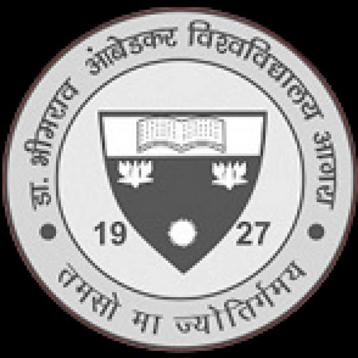

Welcome to My Portfolio

I'm Assistant Professor in Dept of Library and information Science.
I am a librarian in college, known for his passion for literature and commitment to fostering a love for reading among students. With a Master’s degree in Library Science, Akhil has developed a rich understanding of information organization, digital resources, and user engagement strategies. His role involves managing the library's collection, assisting students with research, and organizing events that promote literacy and learning.
In his portfolio, I can highlight his key skills, such as:
1. Collection Development: Expertise in selecting and acquiring new books and resources that cater to the diverse interests of students and faculty.
2. Information Literacy: Conducting workshops and one-on-one sessions to teach students how to effectively locate, evaluate, and use information.
3. Digital Resources Management: Proficient in managing online databases, e-books, and digital archives, ensuring that students have access to the latest information.
4. Event Coordination: Organizing author talks, book clubs, and reading challenges that engage the college community and promote a culture of reading.
I can also include testimonials from students and faculty, showcasing his impact on their academic journeys. By emphasizing his contributions to the college's learning environment and his continuous professional development, Akhil's portfolio will reflect his dedication and effectiveness as a librarian.
Learn More
Education
I completed a Master's degree in Library Science from a recognized university.
Work Experience
- Librarian at XYZ Government College
- Librarian at ABC Private School
- Research Librarian at DEF Research Center
Training and Certifications
- Attended Koha training program
- Attended DSpace training program
- Certified in Financial Literacy
Webinars and Paper Presentations
- Participated in national webinar on library science
- Presented paper in international conference on academic libraries